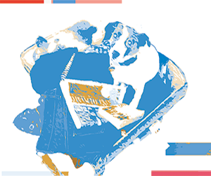
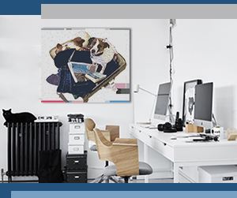

PET PHOTOART TM
Your favourite photos to display in your home or on your devices.Put us in your home or take us away with you.
Pet Photoart creates beautiful artworks of your favourite pet photos.
You can choose from a number of artforms.
PASTEL ART

Pastel Art looks authentic and removes the original background to create the look of a unique artwork that looks like it was created with pastels.
POP ART

Pop Art is reminisient of the style that Andrew Warhol introduced in the 60s.
It is a great look to make the colours pop!
DECOR ART
Decor artwork allows you to select your colour to match your room or devices.
The look will be the same as shown but the colour will vary based on your choice.
YOU CAN CHOOSE FROM A NUMBER OF DISPLAYS.
There are a number of display types print or digital to show in your home or to take with you on your wall, computer or phone, ipad or laptop when you travel.
WALL PRINT
Wall prints of your Pet Photoart look great in your office, your lounge or anywhere in your home.
CALENDER

Your Pet Photoart image can be added as the main image for your calender. Update it ever year.
DEVICES

Take your Pet Photoart on any of your devices. Just specify which devices your would like to add it to as a screensaver and it will be sized ready to go for you.
It's as easy as 1, 2, 3, 4
- Select Artwork
- Select Display
- Submit Photo
- Receive in the Mail